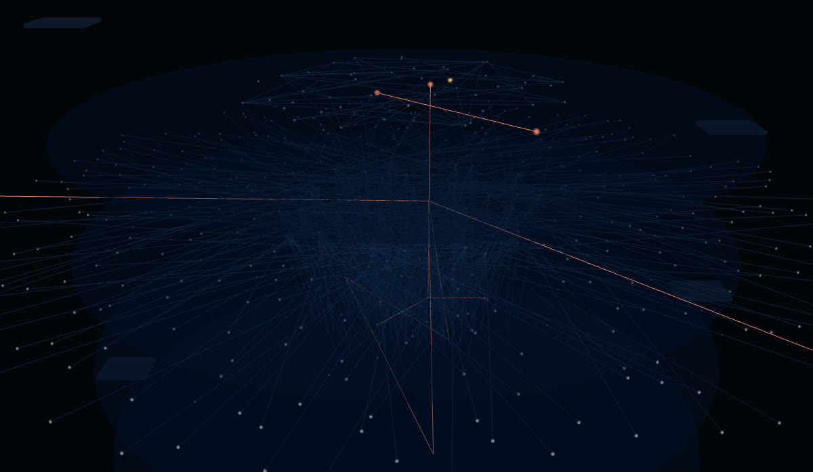
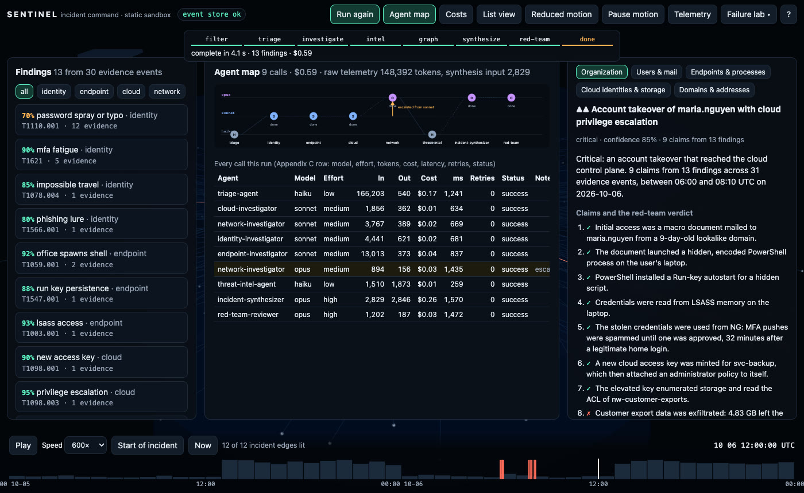
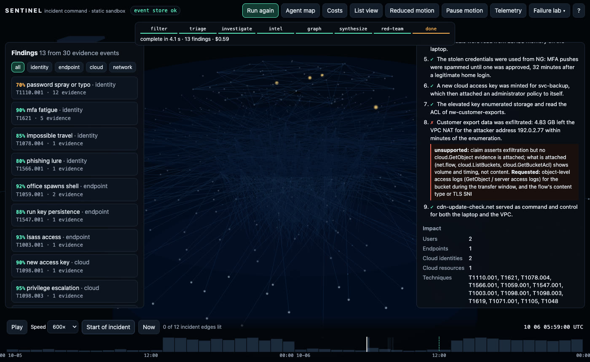
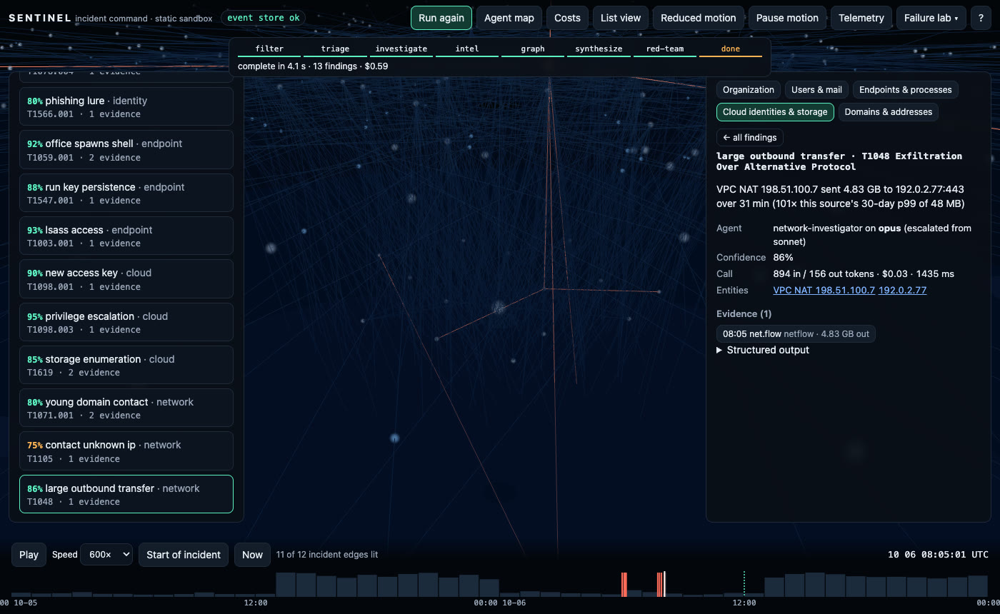
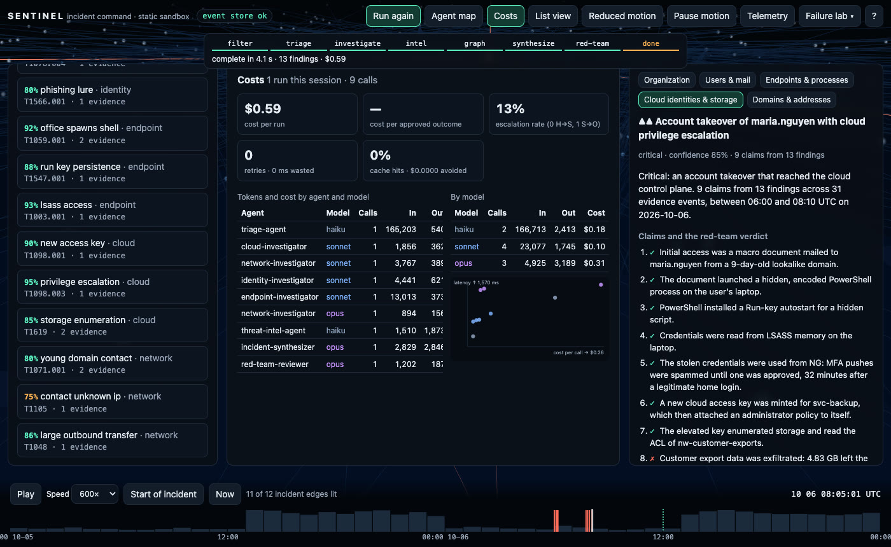
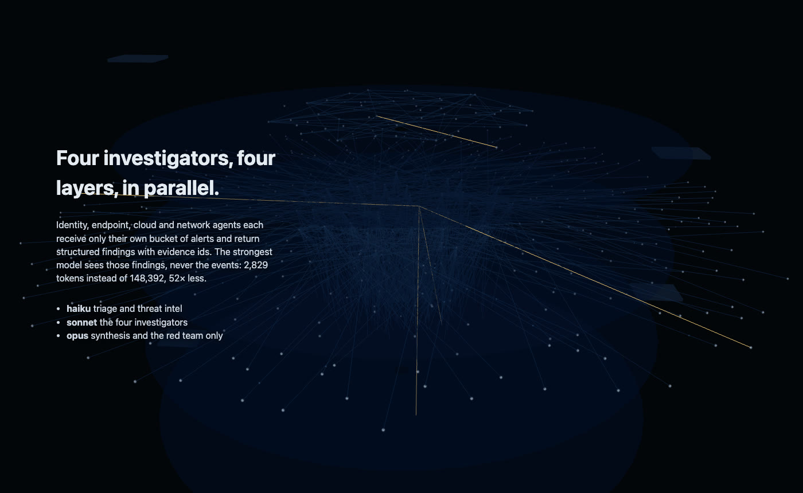
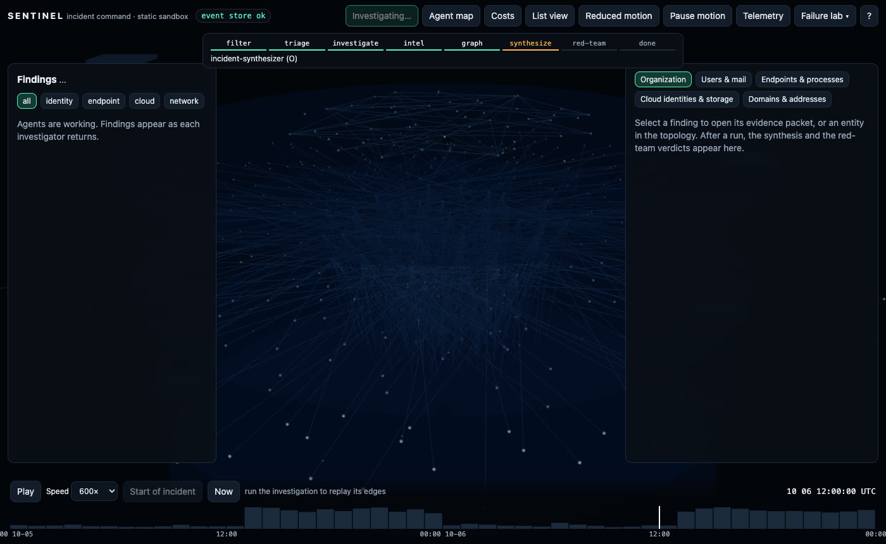

TypeScript · multi-agent · three.js · 2026-10
Which Agent Should Read the Evidence?
A multi-agent cyber incident command center on a synthetic 48-hour breach: 1,996 events filtered to 29 alerts, four investigators in parallel on their own buckets, a synthesizer that sees 2,829 tokens of findings instead of 148,392 of telemetry, one escalation (a 4.83 GB transfer at 55% confidence sent to the strongest model as 894 tokens, back at 86%), and a red team that marks the exfiltration claim unsupported. $0.59 a run at list prices.

Built from blueprint 01 of a written build book (Volume VI, Claude Code multi-agent + motion UI) as one vertical slice. Everything is synthetic: the organization, people, laptops, cloud identities, buckets, domains and addresses are generated by the repository, and attacker addresses use documentation ranges. No model is called: each application agent is a deterministic analyzer, and a simulated provider charges it tokens by the size of what went in and out at a configured price table; routing, escalation, retries, circuit breaking, caching and the cost telemetry are real code paths covered by tests. Not built: real model calls, Temporal, Kafka, ClickHouse, Neo4j, Redis, Terraform and cloud deployment, SSO, billing, real threat-intel feeds.
01 — The problem
A security team gets fragmented alerts: a mail gateway, an identity provider, endpoint sensors, the cloud control plane, DNS and flow logs. Reading all of it with one large model is expensive and, worse, makes the explanation hard to defend: which event supports which sentence? Can specialized agents reconstruct the incident from evidence, with the strongest model reading only their findings, and can a critic catch the sentence the evidence does not support?
The build book's rules for this volume: the cheapest model that can reliably do the task, structured JSON between agents instead of transcripts, never feed raw streams to the synthesis model, escalate only the narrow subproblem, record tokens and cost per agent, and keep a human approval gate. Blueprint 1 of ten, built as its demo scenario end to end, and the repository ships its own Claude Code configuration (agents, rules, hooks) following the same routing policy.
02 — What I built
A Next.js site that runs the whole workflow in a Web Worker on synthetic fixtures, plus a Fastify API on PostgreSQL that runs the same workflow server-side, persists it and streams progress, started by one docker compose up.
- A synthetic scenario: 430 entities on four layers and 1,996 events over 48 hours, with a planted phishing-to-cloud-compromise chain, 40 duplicate sensor reports, a benign password burst, a benign reader of the same bucket, and a mail subject that says "ignore previous instructions".
- An agent runtime (
packages/agents): the book's agent contract as a JSON schema with a bundled checker, a router with per-tier escalation, retries with backoff, a circuit breaker, a cache, a deterministic simulated provider, and the Appendix Cagent_invocationstelemetry with its dashboards. - The workflow: deterministic filter → triage (haiku) → identity, endpoint, cloud and network investigators in parallel (sonnet) → threat intel (haiku) → evidence graph → synthesis on compact findings (opus) → red team (opus) → human approval.
- A motion layer: normal traffic along benign relations, the chain lit layer by layer as the story scrolls, incident edges lit chronologically to a time cursor, evidence packets flowing into investigator workspaces while agents run, reduced motion, pause, deep links, list view and a telemetry HUD.
- The repo's own Claude Code setup: CLAUDE.md with the routing policy, 11 shared build agents plus the 8 blueprint agents, rules per area, and hooks that typecheck on edit, block destructive commands and scan for secrets.
03 — How it was built
- 01
Filter and triage before any model reads anything
The window is 148,392 tokens of JSON. Triage runs on the cheap tier once: it deduplicates (40 duplicate EDR reports), keeps events with a source risk of 0.3 or more plus any burst of failed logins, extracts the entities they touch, assigns a first severity and routes 29 alerts by source. Each investigator then receives only its bucket: 4,441 input tokens for identity, 13,013 for endpoint, 1,856 for cloud, 3,767 for network.
const alerts = unique.filter((e) => e.risk >= 0.3 || burst.has(e.id)); // sources' own scores, first cut buckets.identity.push(...) // idp + mail gateway -> identity-investigator, edr -> endpoint, cloudtrail -> cloud, dns + netflow -> network - 02
Four investigators, one contract
Every agent returns the same shape: status, confidence, findings with evidence ids and entity ids, assumptions, warnings, and metrics. A hand-written checker validates it before anything is persisted or passed on; a test shows the checker and the JSON schema agree on 12 malformed outputs. The investigators found 13 things: MFA fatigue (4 pushes denied, then one approved from Lagos 32 minutes after a Chicago login), the 9-day-old lookalike sender, WINWORD spawning hidden encoded PowerShell, a Run-key autostart, LSASS access, a new access key, AdministratorAccess attached to it, bucket enumeration, a young command-and-control domain, and a 4.83 GB transfer. The benign 12-failure password burst was found too, and marked benign.
- 03
Escalate the subproblem, not the context
The network investigator was 55% sure about the 4.83 GB transfer: size alone, no baseline at that tier. The runtime escalated that one finding, 894 tokens, to the strongest model, which compared it with the source's 30-day p99 (101× over) and came back at 86%. The other three network findings from the cheaper call stand. One escalation in eight agents; the strongest model's total input was under 5% of the raw telemetry.
compact: (input, prev) => { const weak = prev.findings.filter((f) => f.confidence < 0.6); ... } // only the alerts behind the weak findings if (up.confidence < res.confidence) return res; // a worse escalation is discarded, the cheaper answer stands - 04
Synthesis from findings only, then a red team
The synthesizer receives 2,829 tokens: the findings, the entities they name and the times of their evidence, never the events. It writes 9 claims, each carrying the evidence types that would justify it. Claim 8, "customer export data was exfiltrated", rests on a flow and an enumeration event. The red-team reviewer checks each claim's attached evidence against its requirements and marks that one unsupported: a 4.83 GB flow shows volume and timing, not content, and no object-level read is in evidence. It requests the bucket's access logs for the transfer window. In the scenario that logging is off, so the honest answer is "not yet known".
claim("exfiltration", `Customer export data was exfiltrated: ...`, [xfer, enumer], ["cloud.GetObject", "net.flow"]); const missing = c.basis.filter((b) => !present.has(b)); // -> verdict unsupported, request: object-level access logs - 05
Chaos: 429s, 500s, timeouts, a dead tier
The simulated provider injects failures. A 429 then a 500 are retried with backoff on the same tier; two timeouts exhaust the attempts and the subproblem climbs one tier; three consecutive failures open the circuit for that alias and later calls skip it; a failed investigator leaves the run partial and the synthesizer uses what returned; a threat-intel outage on every tier leaves the findings unmapped rather than failing the run. In the command center the failure lab arms a 429 storm on the cheap tiers and the run still completes, at a higher cost that the dashboard shows as retry waste.
- 06
Cost telemetry as the book specifies
Every call is an Appendix C row: workflow, run, agent, model alias, effort, prompt version, tokens in and out, estimated cost, latency, retries, status, error code, result hash. The dashboard aggregates cost per run ($0.59), cost per approved outcome, tokens by agent and model, the escalation rate (12.5%), retry waste by error class, cache hits with the cost they avoided, and a cost-against-latency Pareto per call. A regression test compares a fresh run with the committed baseline within 2% per agent.
- 07
Motion that carries state, and a human gate
The store holds the product state; the scene renders it. Evidence packets fly from alert nodes into an investigator's workspace only while that agent runs; incident edges light in time order up to the replay cursor; node emphasis uses size and a halo, not colour alone. Reduced motion makes every transition instant and keeps every fact; the list view carries all of it without WebGL. Approval is the last step: it refuses until the unsupported claim is acknowledged, then exports the hashed remediation plan with the flag and the evidence request, and in Docker writes the audit log.
- 08
The same product behind an API, and the repo's own agents
The Docker stack serves the same site against a Fastify API: bearer tokens with roles, row-level security per tenant, idempotency keys, a hash-chained audit log, rate limits, OpenAPI 3.1 with the agent contract published as a component, OpenTelemetry spans and a WebSocket that streams workflow progress. The repository also ships its Claude Code configuration: a concise CLAUDE.md with the Haiku/Sonnet/Opus policy, 19 agent definitions, rules per area, and four hook scripts (typecheck on edit, a pre-bash guard that blocks destructive commands and self-tests in CI, affected tests on subagent stop, a secret scan).
04 — Results
The demo. The agent map after a run: haiku for triage and intel, sonnet for the four investigators, opus for synthesis and the red team, with the one escalation drawn:

The red-team verdicts in the inspector, with the replay cursor part-way through the incident:

The evidence packet of the escalated finding, and the cost dashboard:


The story's second chapter, where the planted chain lights across the layers, and the investigators at work:


Checks. 47 unit, agent and API tests and 9 Playwright journeys; coverage of the domain, agent and motion code 97.9% of statements. Routing: opus input under 5% of the raw telemetry; exactly one escalation with under a third of the investigator's input. Prompt injection in a benign subject and in the attacker's own lure changes nothing. A fresh run matches the committed cost baseline within 2%. Another tenant gets 404 on this incident, its prefixes and its costs; row-level security blocks a query with no WHERE clause.
Performance. 60 FPS with a real GPU (p95 frame 17.3 ms, 17 draw calls, LCP 92 ms). The API on one process: 1,893 requests a second at p95 26.6 ms; 2,000 WebSocket subscribers received 28 progress messages each from a 738 ms server-side investigation.
Watch the 2 min 6 s captioned recording of the whole scenario.
05 — What I'd do next
- Put a real provider behind the same interface for one agent (the red team is the obvious one) and keep the deterministic one as a control, so the cost and quality columns of the Pareto can be compared for real.
- Persist workflow state per step rather than per run, so a worker restart mid-investigation resumes instead of retrying.
- Learn the flow baseline from the tenant's own history instead of the scenario's benign flows, and give the cheaper tier access to it so the escalation is not needed.
- A rules editor for the red team: claim kinds and the evidence types that justify them are data, and analysts should own them.